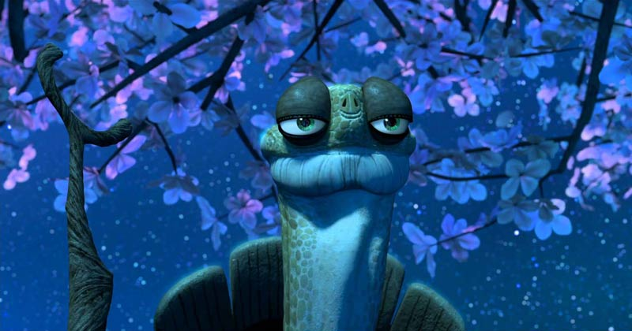

Tenho uma surpresa para você...
Tenho uma surpresa para você...
Você é uma das pessoas mais especiais que já entrou na minha vida. 💖
Giovanna Mayumi Prandini Miura
Às vezes, eu paro para pensar em como você conseguiu mudar a minha vida em tão pouco tempo.
Desde o momento em que eu te vi, senti que havia algo diferente. Um sentimento que eu não sabia explicar, mas que, aos poucos, foi ficando cada vez mais presente.
Eu comecei a reparar nos seus olhos, no seu sorriso, no seu jeito de falar e até nas pequenas coisas que você faz sem perceber. E acho que é justamente isso que torna você tão especial para mim: eu gosto de conhecer cada detalhe seu, até aqueles que talvez você mesma não perceba.
Quando percebi, você já estava ocupando um espaço enorme nos meus pensamentos e, principalmente, no meu coração.
Você está certa. Mesmo a gente estando junto há pouco tempo, às vezes parece que eu te conheço há anos. É estranho pensar que alguém que entrou na minha vida há tão pouco tempo já consegue fazer tanta diferença nela.
Você me fez sentir coisas que eu nunca tinha sentido antes.
Até as conversas mais simples com você conseguem se tornar algumas das melhores partes do meu dia. Eu fico feliz quando vejo o seu “bom dia”, sorrio quando recebo uma mensagem sua e, de alguma forma, até um simples sorriso seu consegue mudar completamente o meu humor.
Quando estou perto de você, sinto uma tranquilidade difícil de explicar. É como se, por alguns momentos, o resto do mundo pudesse esperar. E tudo o que importa fosse aproveitar aquele instante ao seu lado.
Eu gosto de imaginar tudo o que ainda vamos viver.
As conversas que ainda teremos, os lugares que ainda conheceremos, as risadas que ainda vamos dar e todas as pequenas lembranças que, um dia, vamos olhar para trás e perceber o quanto foram importantes.
Desde o primeiro momento em que te vi, alguma coisa mudou dentro de mim.
E, pensando em todos os momentos da minha vida, encontrar você foi, sem dúvida, um dos mais bonitos.
Existe uma reflexão filosófica que diz assim:
“A vida feliz consiste na tranquilidade da mente.” - Cícero
E eu acho que comecei a entender o verdadeiro significado disso quando percebi como me sinto perto de você.
Porque, quando estou ao seu lado, acontece algo simples: eu sorrio.
Às vezes, nem existe um motivo específico. É apenas aquele sorriso involuntário que aparece quando o coração está feliz..
Talvez eu não precise de grandes acontecimentos para saber o quanto você é especial para mim.
Às vezes, basta olhar para você.
Basta o seu sorriso, o seu olhar, uma conversa qualquer ou simplesmente saber que você está por perto.
E se existe algo que eu quero que você nunca esqueça, é isso:
Eu sou muito feliz por ter encontrado você.
Obrigado por ter entrado na minha vida, por cada conversa, cada sorriso, cada momento e por todos os sentimentos que você despertou em mim.
Espero que esse seja apenas o começo de tudo o que ainda vamos viver juntos
Com amor,
Rhyan Lopes ❤️
Clique para abrir!
